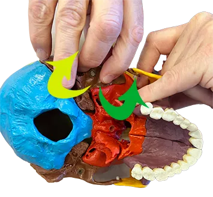
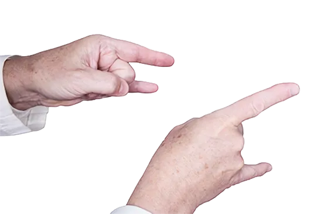
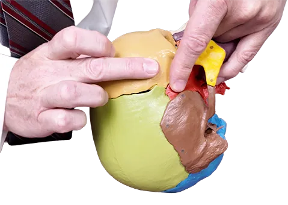

BOOK: INTRODUCTION TO CRANIAL OSTEOPATHY.
VIDEO: INTRODUCTION TO CRANIAL OSTEOPATHY, PART 1.
VIDEO: INTRODUCTION TO CRANIAL OSTEOPATHY, PART 2.
Build a solid foundation in basic cranial practice. Gain familiarity with the underlying bony anatomy, including specialized strategies for understanding complicated articulations. Follow step-by-step instructions with illustrations to confidently find critical landmarks. Start with simple exercises that progress to actual diagnostic and treatment techniques. End up with a complete beginning cranial toolkit.
Find the central landmarks used for all cranial osteopathy. Learn the vault hold and the finger patterns taught in all beginning cranial classes. Learn beginning cranial techniques: venous sinus technique, condylar decompression, parietal lift. This material will be useful for most beginning cranial classes, and will set the stage for going on to Part 2.
Building on the material in Part 1, we will progress to slightly more advanced techniques. These require more detail and a longer progression to reach actual diagnosis and treatment. At the end of this video, you will have a complete beginning cranial toolkit. In addition, these chapters have been constructed to flow seamlessly into a series of intermediate techniques should you be interested in further studies in the future.
How We Teach
Landmarks
In order to do cranial, you must be able to reliably put your finger on a landmark, despite overlying hair and differing head shapes. We provide a series of preparatory landmarks to exactly triangulate the landmarks that you need to find.
What is Happening Underneath
For each technique, in addition to telling you to put your fingers in a certain location and push a certain way, we also provide a picture of what is happening to the underlying bone. This knowledge turns a superficial technique into a deep treatment.
Verifying the Effect
When doing cranial, one sometimes asks “What am I actually doing?”. For each technique, we first show you how to try it on yourself so you can verify what it is doing and fine-tune your technique. For some techniques, we then show you how to practice on another person in a convenient position. By this time, you have practiced enough to try the technique in the actual treatment position, where you may have limited visual access and inconvenient finger positioning. If necessary, you can go back and forth to the preparatory exercises until you are 100% sure of what you are doing.
Douglas Weston, DO
Douglas Weston, DO graduated from New York College of Osteopathic Medicine and completed the Neuromusculoskeletal Medicine residency at St. Barnabas Hospital in Bronx, New York. During his 25 years of practice and teaching, he had a hospital practice where he taught medical students and medical residents, had a private practice in New York City, and taught at 4 colleges of Osteopathic Medicine, at the last two of which serving as Chair of the Department of Osteopathic Manipulative Medicine.